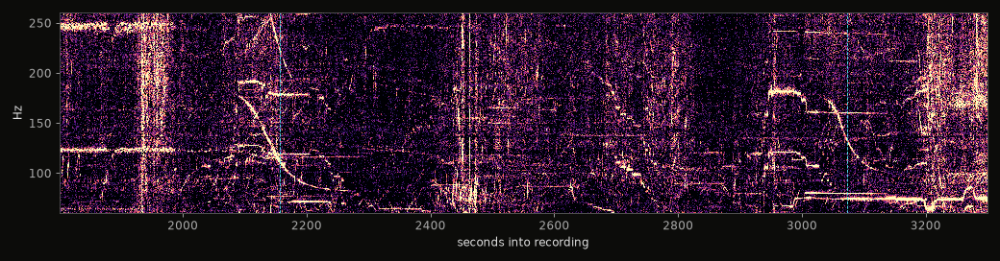
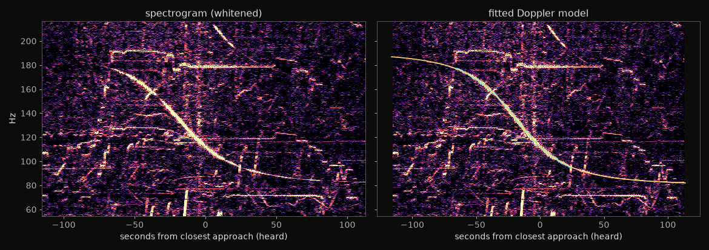
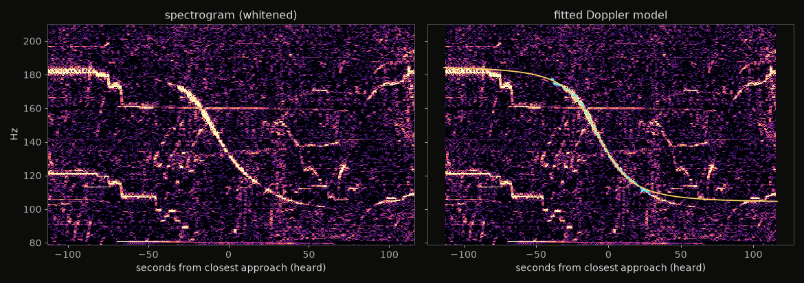

open recreation · real audio · real ADS-B · nov 2026
Planes you can't hear, used to find where a video was recorded
YouTuber colsto showed that faint propeller-plane tones in a recording's background form Doppler curves, and that matching those curves against public flight-tracking data (ADS-B) can locate the recording to about 100 m (IBTimes). He released no code. This is an independent rebuild of the pipeline, run on his published raw recording and the full ADS-B archive for the day.
1 · The sound nobody hears
The recording is an hour of trees, birds and wind. Whiten the spectrogram (remove each frequency's steady background) and look at 60–260 Hz: two descending S-curves appear, marked by the dashed lines.

2 · Each curve encodes speed and distance
For a source flying straight at constant speed v, the heard pitch slides from f₀/(1−v/c) down to f₀/(1+v/c). The size of the drop gives the speed; how quickly it drops gives the closest slant distance. Try it:
yellow: your curve · cyan dots: event 2 as tracked in the real recording. Sound propagation delay is modelled (emission time ≠ reception time).
Each real curve is ridge-tracked on the spectrogram and fitted by least squares:

event 1

event 2
3 · Search the whole country
ADS-B archive for 8 Sep 2026 (adsb.lol, 3.9 GB), known jets removed. Every flight point is interpolated to 1 s. For each 200 m ground cell we compute when the closest approach would have been heard, using the 3D slant distance (terrain elevation from a national elevation model, since ADS-B altitude is above sea level) and the speed of sound.
colsto reported ~73,000 → ~15,000 at the equivalent stages. Our counts are larger because our speed and distance windows are deliberately wider.
4 · Score and rank
For each surviving cell, the real flight trajectory is replayed: the Doppler curve that position would have heard is predicted, then compared against the recording with one shared time offset across both events (colsto's "locked two-event" score) and a free engine pitch per event.
Top 25 distinct flight pairs, coordinates rounded to ~1 km. Gold = rank 1.
What's missing
- Tighter event windows. colsto measured each curve's speed and distance range by hand. Ours are deliberately generous, so many more flight pairs qualify.
- Whole-hour silence. The silence filter currently covers only the gap between the events and only prop aircraft. The full hour, with jets and helicopters, would prune far more.
- Trajectory detail. Scoring on raw ADS-B with turns and climbs, plus harmonics, is the part colsto says separates 15,000 candidates down to one.
- Date boundary. Only the 8 Sep UTC archive was used. A recording in a US evening falls partly in 9 Sep UTC.
Run it
git clone https://github.com/kvnloo/doppler-geoloc && cd doppler-geoloc/pipeline uv venv && uv pip install numpy scipy pandas pyarrow soundfile matplotlib pillow # see pipeline/README.md for the stage order and data downloads
Privacy note
The technique is real but narrow: it needs audible-to-a-spectrogram prop traffic, good ADS-B coverage and a known date. Cutting the audio, heavy noise suppression or removing the low band defeats it more reliably than a simple high-pass, per colsto's tests. This site shows only rounded candidate locations and does not identify any camera.